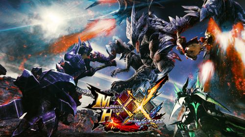

몬스터 헌터
몬스터 헌터 더블 크로스
몬스터 헌터 월드 - 아이스본
몬스터 헌터 라이즈
몬스터 헌터 더블 크로스

2016년 10월 27일 오후 8시 몬스터 헌터 다이렉트에서 발표된 몬스터 헌터 크로스의 후속작.
발매 기종은 3DS이며, 발매일은 2017년 3월 18일이다. 메인 디렉터는 이치하라 다이스케.
패키지에 등장하는 간판 몬스터는
발파루크
이다.
줄임말로는
'덥크'
라고 불린다.